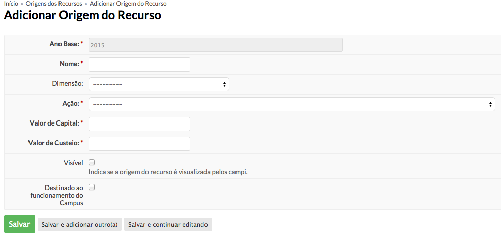
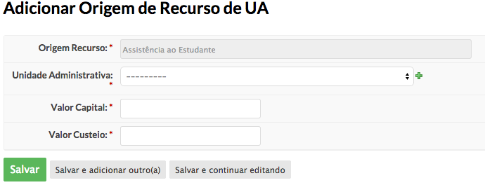
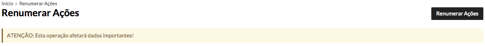
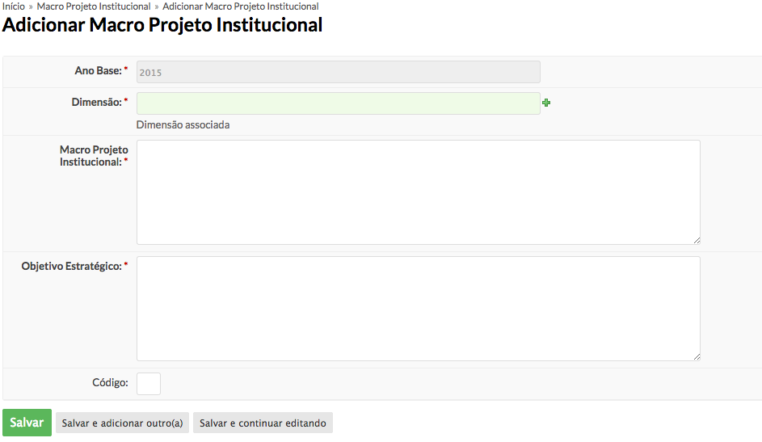
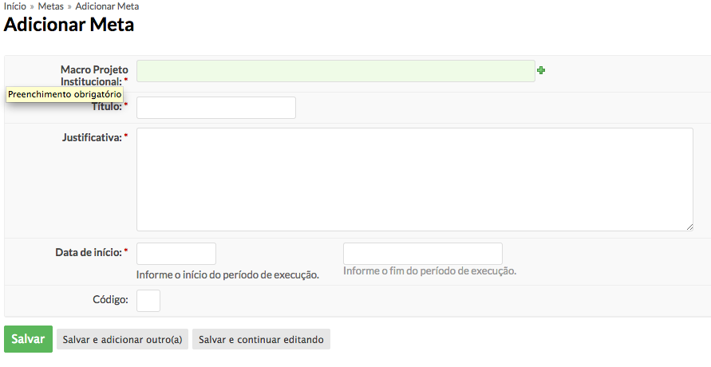

O usuário com perfil de administrador do planejamento é responsável por cadastrar as entidades básicas necessárias ao funcionamento do módulo. Além de controlar o período, utilizado pelos usuários responsáveis pelos setores sistêmicos e pelas demais unidades organizacionais, para o cadastro de ações e atividades.
(Utilizado em todos os anos do planejamento.)
Acesse Des. Institucional > Planejamento > Cadastros Básicos > Dimensões.
Acesse Des. Institucional > Planejamento > Cadastros Básicos > Unidade de Medida.
Acesse Des. Institucional > Planejamento > Cadastros Básicos >Natureza de Despesa.
Acesse Des. Institucional > Planejamento > Configuração > Período.
Preencha os campos do formulário com o período de datas de cada fase do planejamento.
Vigência: Período de vigência do planejamento.
Cadastro de Sistêmico: Período para cadastro do macro projeto institucional, metas e ações propostas pelo coordenador de planejamento sistêmico.
Cadastro de Campus: Período para cadastro de ações e atividades pelo coordenador de planejamento do câmpus.
Validação: Avaliação das ações/atividades.
Acesse Des. Institucional > Planejamento > Configuração > Unid. Administrativa.
Acesse /admin/financeiro/acaoano/
Preencha o formulário com os valores de capital e custeio de cada ação. Baseando-se no orçamento.
Nota
Antes de cadastrar a origem de recurso, é necessário cadastrar a ação com os respectivos valores de capital e custeio no modulo financeiro:
Acesse Des. Institucional > Planejamento > Configuração > Origem de Recurso.
Ao acessar o formulário, o usuário poderá cadastrar uma origem de recurso com valores de capital e custeio menores ou iguais ao da ação selecionada.
Nota
Após o cadastro da Origem de Recurso a descentralização continua para as unidades administrativas

Acesse Des. Institucional > Planejamento > Configuração > Origem de Recurso. Selecione uma origem de recurso.
Preencha o formulário, divindo o valor da Origem de recurso entre as Unidades Administrativas.

Acesse Des. Institucional > Planejamento > Configuração > Renumerar Ações.
Esta funcionalidade renumera todas as ações do ano atual do planejamento. Mas só fica disponível quando todas as fases forem encerradas.
Para renumerar, o Administrador do planejamento pressiona o botão, como mostra a imagem abaixo e aguarda o processamento.
O macro projeto institucional é o objetivo geral da instituição definida pela organização para cumprir a função institucional.
Acesse Des. Institucional > Planejamento > Macro Projeto Institucional.

O usuário pode adicionar a meta clicando no macro projeto institucional ou acessando no menu Des. Institucional > Planejamento > Meta.

Após o cadastro o usuário associa a unidade administrativa que participará da meta.
Para isso, clica-se nos detalhes da meta.
Na mesma tela de detalhes da Meta, o usuário pode adicionar a ação proposta e associar a alguma unidade administrativa.